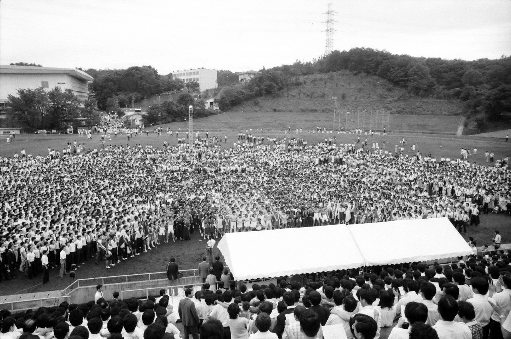

滝山祭

滝山祭とは、創価大学が開学して翌年から始まった伝統的な寮祭である。入学式に出席されなかった創立者を、何としても男子寮生の手でお招きしたいとの思いで「滝山祭」は始まった。滝山祭では、美術展やパレード、日々の研鑽の成果をまとめた展示などを通して大学全体でにぎわう。また、記念フェスティバルが開催され、各クラブ、男女の寮生代表・留学生の演目、演劇などが行われる。
第一回滝山祭には創立者も来場し、各寮の寮歌発表やミュージカル「滝山の二十九日」、ヒマラヤ杉の記念植樹、盆踊りなどが、二日間にわたって盛大に行われた。
第二回滝山祭では、創立者が「スコラ哲学と現代文明」と題し記念講演。第六回からは二日間の開催を一日に短縮した。
回数を重ねる毎に規模も大きくなり、第二十三回には、チリのエイルウィン元大統領が来学され、学生の熱演を鑑賞した。
そして二十四回目の開催を前にした一九九五年春、学生一人一人のレベルにおいての充実と向上に当てるため、新カリキュラムの導入によって行事開催が現実的に不可能になったため、滝山祭の不開催が決定した。
その後、滝山祭の精神は、青春城総会、SUNSUNスポーツフェスティバルなどの行事に受け継がれ、寮生の成長の舞台となっている。